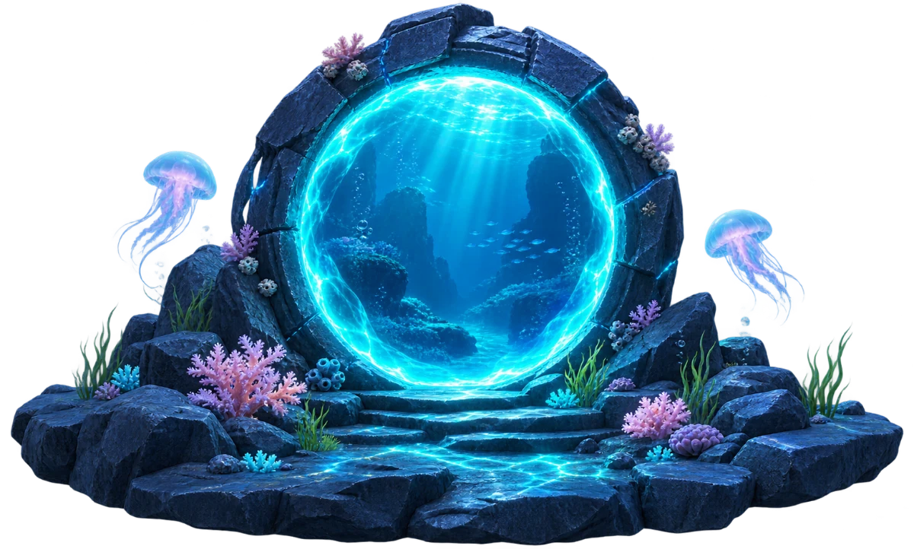

LAYER 01
Sunlit Reef
Into the Deep

Dive from a sunlit reef to the bioluminescent seafloor, 120 metres below the surface.
Building the ocean scene…

Dive from a sunlit reef to the bioluminescent seafloor, 120 metres below the surface.
Building the ocean scene…